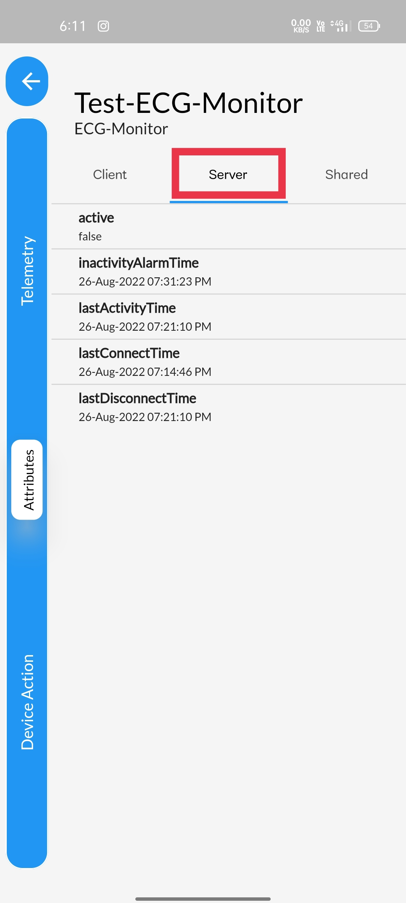

STEP 1One of the way to Access the device Attributes&is simply clicking on the devices displayed in the home page itself&the devices displayed corresponding to the asset opted in the side panel. |
 |
STEP 2You can see different devices displayed in the home page& after opting different asset in the side panel. |
 |
STEP 3Another way to Access the device attributes is, Using dashboard |
 |
STEP 4Click on the device relationship tree option available. |
 |
STEP 5You are displayed with assets and devices.&Tap open the device that you wanted to access the attributes using the pop-up button |
 |
STEP 6
Select the more option available, to access device attributes.&You can also notice other devices corresponding to the asset displayed in the side panel. |
 |
STEP 7You are displayed with telemetry section, &Navigate to the attribute section by clicking on the attributes option displayed in the side panel. |
 |
STEP 8Client attributes, displays information such asi) Manufactureii) Serial numberiii) deviceIDiv) device_profilev) firmware_version |
 |
STEP 9Server attributes, displays information about the server such asi) activeii) in activity alarm timeiii) last activity timeiv) last connect timev) last disconnect time |
|  |
STEP 10Shared attributes, displays information shared by the server to the device&and information shared by the device to the server. |
 |